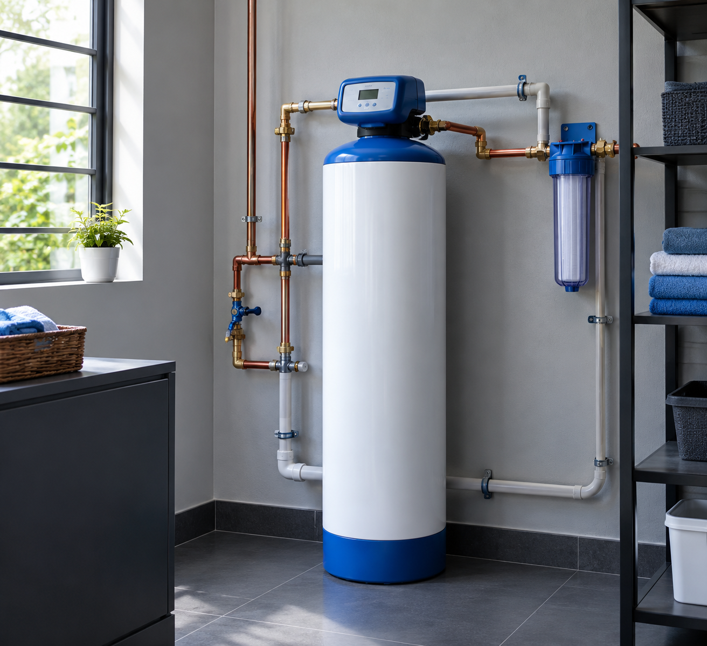
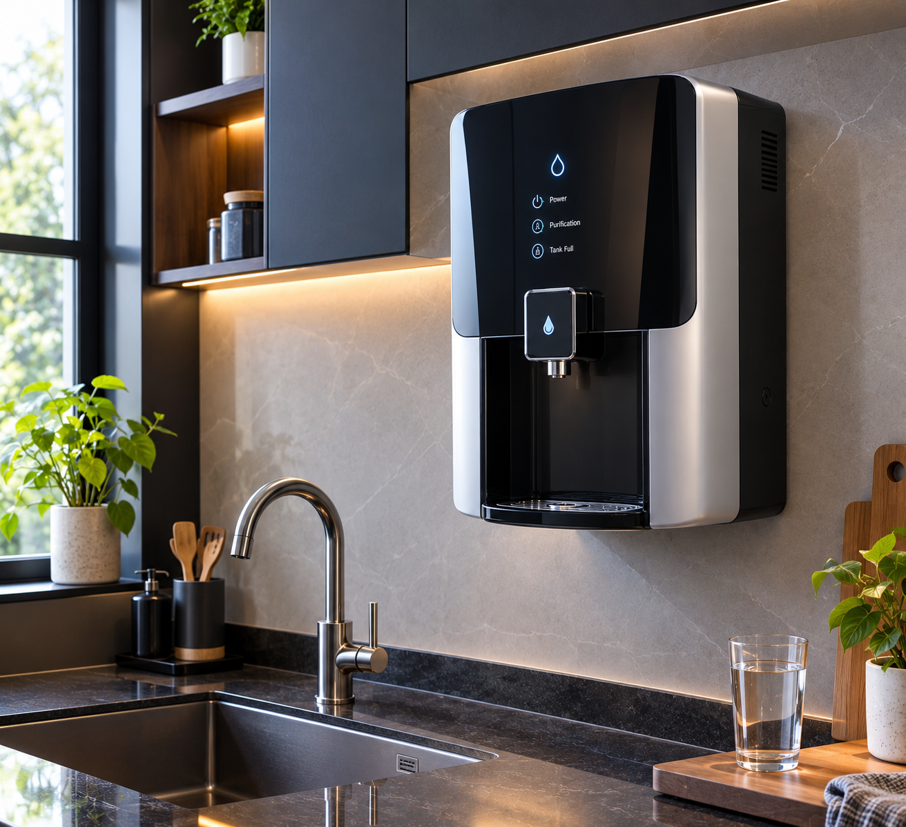
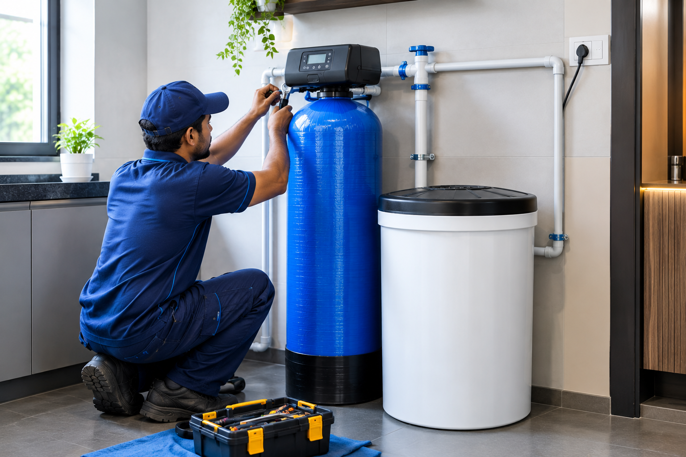
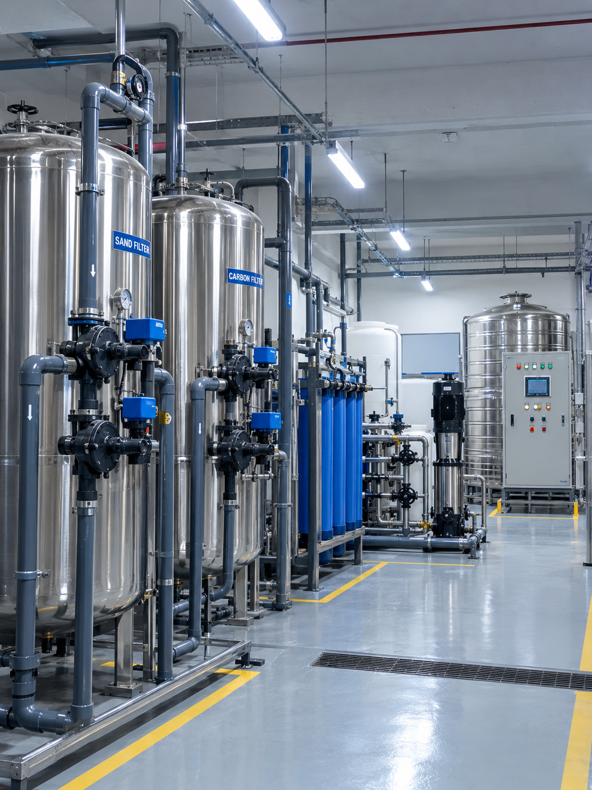
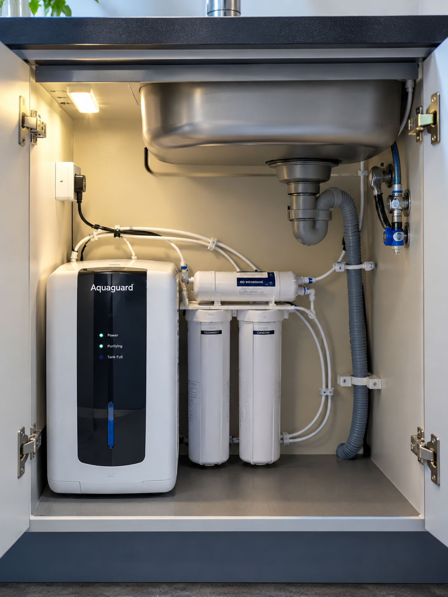
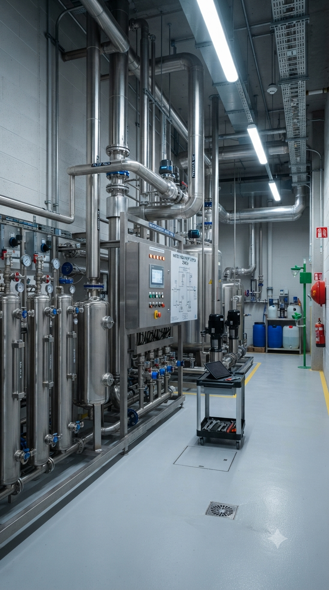
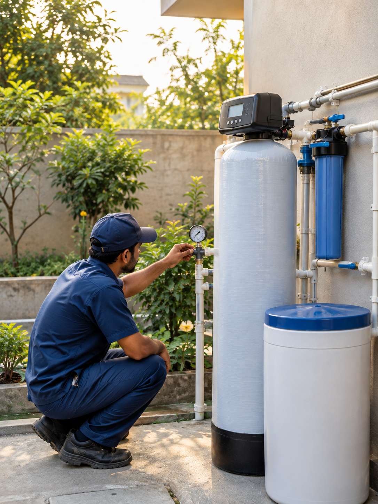
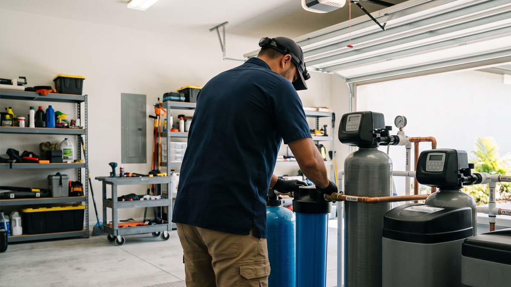

From a nagging problem to water that behaves
Every install follows the same path — nothing skipped, nothing guessed.
-
Problem
Scale on taps, soap that won't lather, or a geyser working harder than it should.
-
Test
We take a hardness and TDS reading from your actual source — borewell or municipal.
-
Understand
We walk you through what the numbers mean and what a softener does versus a purifier.
-
Solution
A system sized to your household or business — not the biggest box we can sell you.
-
Installation
Our team fits and commissions the system on-site, and shows you how to run it.
-
Support
Ongoing service coordination so the system keeps performing, year after year.
Two problems, two different fixes
Softening and purification solve different things. We help you work out which one your water actually needs — often both.

Water Softener
For hardness, scale, and everything it slowly damages
A softener removes the calcium and magnesium that cause scale on taps, film in shower fittings, and a heavier load on your water heater and appliances.
- Good fit for borewell-fed homes and apartments
- Cuts down on soap and detergent use
- Protects geysers, washing machines and RO units downstream

Water Purifier
For drinking water you don't have to think twice about
Purification is chosen against your source and TDS reading — not every kitchen needs the same setup, and over-purifying wastes as much water as under-purifying wastes your health.
- Matched to your TDS and daily consumption
- Options for high-TDS borewell water and municipal supply
- Suited to homes, offices and institutional kitchens
Not sure what you need? Find out in three taps
Answer three quick questions and we'll point you to a starting recommendation — free, no obligation.
What's your water source?
What kind of property is it?
What's bothering you most?
Your starting recommendation
This is a starting point based on common cases — we'll confirm with an on-site water test before recommending a final system.
Signs your water is working against you
Hard water rarely announces itself — it shows up as small, recurring annoyances first.
-
Scale on taps & fittings
Chalky white deposits build up around taps and shower heads.
-
Mineral buildup on surfaces
Glassware, tiles and steel fixtures dull faster than they should.
-
Soap won't lather
Hardness minerals bind with soap before it can do its job.
-
More detergent, same result
You use more product to get the same clean — and pay for it.
-
Water heaters scaling up
Sediment builds inside geysers, cutting efficiency over time.
-
Plumbing wears out early
Pipes and appliance valves take on damage they weren't built for.

Why people in Bengaluru call SV Marketing
We're not trying to sell you the biggest system. We're trying to sell you the right one.
- ✓ ZeroB systems, sized to your water source and household
- ✓ Years of local experience with Bengaluru's borewell and municipal water
- ✓ Recommendations based on your hardness and TDS, not a fixed package
- ✓ Installs for homes, apartments, offices and institutions
- ✓ Hands-on installation and setup support
- ✓ Ongoing service coordination after you're set up
Recent installations around the city
A look at real fits — apartments, independent homes and office kitchens.





Based on Magadi Main Road, serving all of Bengaluru
We're located near NICE Road, Kachohalli, and serve customers across the city, subject to service availability.
- Rajajinagar
- Vijayanagar
- Malleshwaram
- Basavanagudi
- Jayanagar
- Whitefield
- Electronic City
- Yelahanka
- Nagarbhavi
- Kengeri
- Magadi Road
- RR Nagar
Toll Junction, Building No. 63/1, NICE Road, Magadi Main Road, Near HP Petrol Pump, Chikkagollarahatti, Kachohalli, Karnataka – 562162
Check if we cover your areaQuestions we hear a lot
Clear answers to common questions about water softeners and water treatment.
What is a water softener?
A water softener is a water-treatment system designed primarily to reduce hardness-causing minerals such as calcium and magnesium.
Is a water softener the same as an RO purifier?
No. They perform different functions. A water softener primarily addresses water hardness, while an RO purifier is designed for specific drinking-water purification requirements.
Which water softener is suitable for my home?
The appropriate system depends on water hardness, source, daily consumption, number of users and application. We work this out with you before recommending anything.
Do you provide water softener solutions in Bangalore?
Yes. SV Marketing provides ZeroB water softener solutions for residential and commercial requirements in Bangalore.
How does a water softener work?
A water softener typically uses an ion-exchange process to reduce calcium and magnesium ions responsible for water hardness. The softened water helps reduce scale formation in plumbing, appliances and fixtures.
What are the signs of hard water?
Common signs include white scale on taps and shower fittings, soap that does not lather easily, dry-feeling skin, dull-looking clothes and scale buildup inside water-using appliances.
Will a water softener remove TDS from water?
No. A conventional water softener is primarily designed to address hardness caused by calcium and magnesium. It is not a substitute for an RO purifier or other treatment designed to reduce dissolved solids.
How much does a water softener cost?
The cost depends on the water hardness, household size, water consumption, system capacity, installation requirements and the type of softener selected. We recommend evaluating the requirement before choosing a system.
Why should I install a water softener at home?
A water softener can help reduce the effects of hard water throughout your home, including scale buildup on plumbing fixtures, bathrooms, geysers and other water-using appliances.
Can a water softener be used for the entire house?
Yes. Whole-house water softeners are designed to treat water entering the home so that multiple outlets can receive softened water.
Does a water softener improve drinking water?
A water softener and a drinking-water purifier serve different purposes. Whether softened water is suitable for drinking depends on the system, water chemistry and the treatment setup. Drinking-water purification should be selected based on the quality of the source water.
How do I know if my water is hard?
Water hardness can be measured through a water-quality or hardness test. Visible scale buildup and soap-related issues can indicate hardness, but testing gives a more reliable basis for selecting a treatment system.
How often does a water softener need maintenance?
Maintenance depends on the type of system, water quality, household usage and operating conditions. Regular servicing and checking the system according to the manufacturer's recommendations helps maintain performance.
Does a water softener require salt?
Many conventional ion-exchange water softeners use salt during the regeneration process. The exact requirement depends on the type and model of water softener installed.
Can water softeners be installed in apartments?
Yes. Water softening solutions can be considered for apartments, villas and other residential properties. The appropriate setup depends on available installation space, plumbing configuration and the requirement of the property.
Can you install water softeners for commercial properties?
Yes. Water treatment requirements can be evaluated for offices, commercial buildings, hotels, institutions and other properties. System selection depends on water usage and application.
Do you provide installation in Bangalore?
Yes. SV Marketing provides water softener solutions and installation support for residential and commercial requirements in Bangalore, subject to site and system requirements.
Can I get a water quality assessment before buying?
Yes. Assessing the source water and understanding the hardness and intended usage can help determine the appropriate water-treatment solution before installation.
How do I choose the right water softener capacity?
Capacity depends on factors such as water hardness, number of users, daily water consumption and the amount of water that needs to be treated. These factors should be considered before selecting the system size.
Get a free water consultation
Tell us about your water source and what's bothering you about it — we'll recommend a system, not a sales pitch.